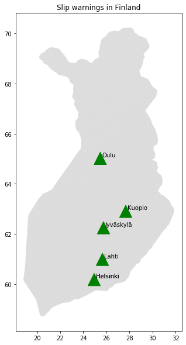

Forecasting slippery weather
Find out if tomorrow is likely to be slippery. Skip the slip!
Legend
Green: Unlikely to be slippery
Orange: Likely to be slippery
Technical details
SkipSkip implements an ML model trained on data from the Finnish Slipping warning service and Finnish Meteorological Institute. It looks at the weather forecast for the next day and predicts the probability of slippery weather. Updates every day.